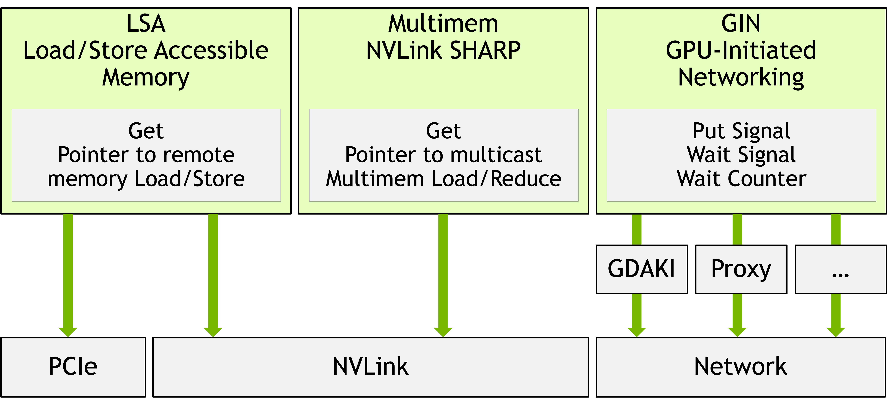
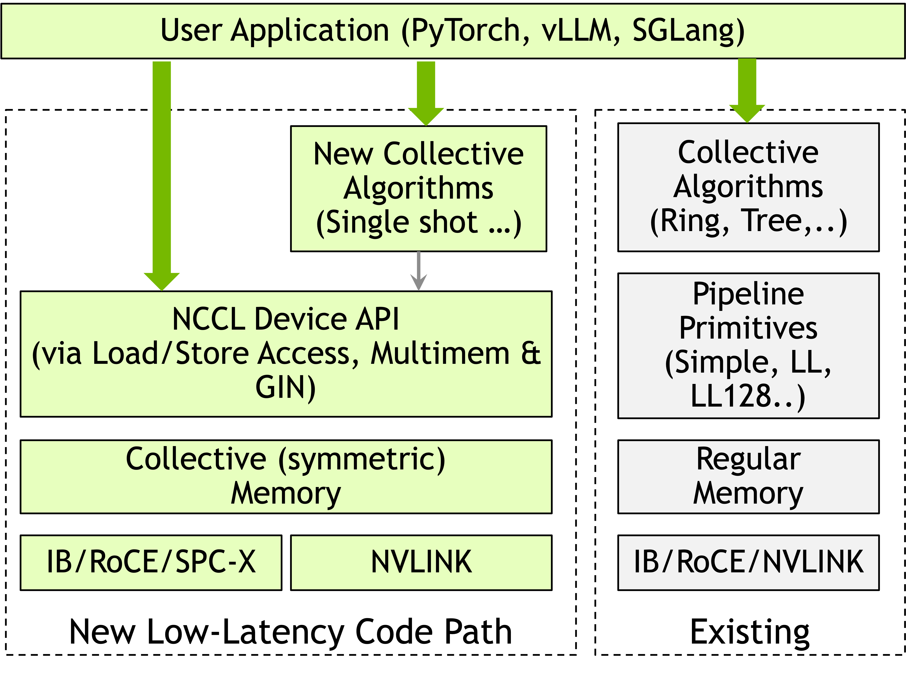
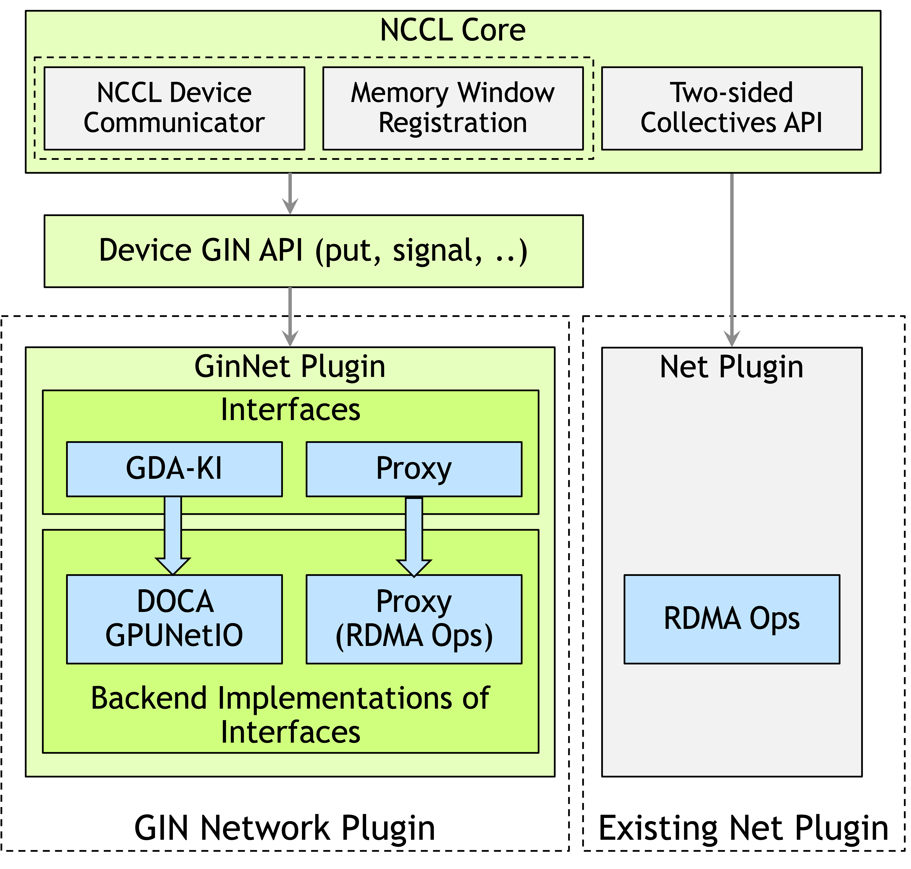

GPU-Initiated Networking for NCCL (NCCL GIN)¶
arXiv:2511.15076v2 · NVIDIA, 2025 关键词：NCCL 2.28 Device API · GIN · DOCA GPUNetIO · one-sided RDMA · DeepEP
1. 核心问题¶
现代 AI 负载（尤其是 MoE 推理 与 编译器生成的融合 kernel）需要从 GPU kernel 内部直接发起、细粒度、低延迟的 GPU↔GPU 通信。传统 NCCL 走 host-initiated 模型——CPU 编排所有通信、每次调用都是独立 kernel launch——对大规模集合通信很稳健，但对：
- MoE 动态 token routing（DeepSeek-V3 风格）
- JAX/Triton 的 comm-compute fusion
- 推理 decode 阶段的点对点小消息
则引入了不必要的 CPU 协调与 host-device 同步开销。
NVSHMEM 已经证明了 device-initiated 通信（IBGDA）的价值，但它是独立 runtime，与 NCCL 生态脱节，用户要么放弃 NCCL 的 topology-aware 集合与生产级基础设施，要么放弃 device-initiated 的低延迟。
本文贡献：在 NCCL 2.28 的 Device API 中引入 GIN（GPU-Initiated Networking），把 device-initiated 一边 RDMA 语义纳入 NCCL 统一 runtime，保留 NCCL 的 hierarchical communicator、容错、弹性扩缩等生产特性。
2. NCCL 2.28 Device API 全景¶
Device API 提供三种 device-side 通信模式，对应三类硬件：
| 模式 | 硬件 | 典型用途 |
|---|---|---|
| LSA（Load/Store Accessible） | NVLink / PCIe（节点内） | 节点内对等 GPU load/store |
| Multimem | NVLink SHARP | 硬件 multicast / reduce |
| GIN（本文重点） | InfiniBand / RoCE（跨节点） | 跨节点 one-sided RDMA |

与传统 host-initiated NCCL 的关键区别：Device API 操作的是 "collective symmetric memory window"，而传统 NCCL 在 regular memory 上跑 pipeline 原语（Simple / LL / LL128）。

3. GIN 三层架构¶

对应到调用栈：
flowchart TB
App["Application<br/>PyTorch · TRT-LLM · vLLM · SGLang · DeepEP"]
subgraph Core["① NCCL Core (host)"]
Core1["ncclCommWindowRegister"]
Core2["Device Communicator init"]
Core3["GIN context 创建"]
end
subgraph DevAPI["② Device GIN API (GPU-callable)"]
DevAPI1["put / putValue / signal"]
DevAPI2["flush / readCounter / waitCounter"]
DevAPI3["readSignal / waitSignal"]
DevAPI4["ncclGinBarrierSession"]
end
subgraph Plugin["③ GIN Network Plugin (dual semantics)"]
direction LR
GDAKI["<b>GDAKI</b><br/>DOCA GPUNetIO<br/>GPU → NIC 直连"]
Proxy["<b>Proxy</b><br/>GPU → CPU lock-free queue → NIC<br/>verbs via iput/test"]
end
App --> Core
App -.kernel 内调用.-> DevAPI
Core --> DevAPI
DevAPI --> Plugin3.1 ① NCCL Core — host 侧¶
ncclCommWindowRegister：集合注册 memory window，返回含所有 peer remote key 的 handle- 资源分配、communicator 初始化、GIN context 创建
- allocation 与 registration 解耦：可从已有 buffer 创建 window
- 当前 NCCL 2.28 要求对称大小，未来将放开（对 disagg 的 prefill/decode 不同 buffer size 尤为重要）
3.2 ② Device GIN API — GPU kernel 内调用¶
四类操作：
| 类别 | 操作 | 含义 |
|---|---|---|
| Data movement | put / putValue / signal |
单边写、小值 inline 写、远端通知 |
| Local completion | flush / readCounter / waitCounter |
本地源 buffer 可复用 |
| Remote completion | readSignal / waitSignal |
远端数据已可见 |
| Barrier / state | ncclGinBarrierSession / reset* |
跨 rank 同步、重置 |
Context：网络并行的核心抽象¶
- 每个 context 封装一条 GPU↔NIC 通道（QP + connection）
- 单 communicator 多 context：可同时利用多 NIC、多 port、多 QP
- 一个 context 可寻址 communicator 内所有 rank，并发发向不同 peer
完成语义（非常重要）¶
- Counter：本地、per-op、按用户提供的
counterID计数 → 适合 pipeline 算法 - Signal：远端、ID 寻址（不是 OpenSHMEM 的 address 寻址）→ 硬件实现更高效
- Flush ≠ Counter：flush 只保证 context 内本地全部完成（源 buffer 可复用），不保证远端可见
Ordering — 默认 unordered¶
- 仅保证同 context、同 peer 的
put与后续signal之间的顺序 - 用法：批量 put 后最后一个带 signal，实现 release-acquire 语义
- 线程间顺序用户用 CUDA 原语自己管（
__syncwarp等）
3.3 ③ GIN Network Plugin — 双语义¶
| 维度 | GDAKI | Proxy |
|---|---|---|
| 通信路径 | GPU ↔ NIC（直连） | GPU → CPU → NIC |
| CPU 参与 | 无 | 每 communicator 一个 pinned 线程 |
| 发起方式 | GPU 直接写 NIC doorbell | GPU 写 64B descriptor → CPU lock-free queue → CPU 发 verbs |
| 硬件要求 | ConnectX-6 Dx+、CUDA 12.2+ | 任何 RDMA NIC（IB/RoCE/iWARP），任何 CUDA |
| 设备 API 所有权 | Plugin 提供 device code | NCCL Core 提供 device code，plugin 只实现 iput/iput_signal/test/regMr |
| 调试 | 只能 device-side | host-side trace 友好 |
| 典型场景 | 生产 HPC/AI 集群 | 开发、legacy、多厂商 fabric |
运行时通过 capability probe 自动选择，NCCL_GIN_BACKEND 可强制覆盖。
4. 设备端 API 示例：环形交换¶
__global__ void ringExchange(
ncclDevComm devComm,
ncclWindow_t sendWin,
ncclWindow_t recvWin,
size_t dataSize, int myRank)
{
ncclGin gin(devComm, /*contextIndex=*/0);
int peer = (myRank + 1) % devComm.nRanks;
// put + 顺带把 peer 的 signal[0] 自增 1
gin.put(ncclTeamWorld(devComm), peer,
recvWin, myRank * dataSize,
sendWin, peer * dataSize, dataSize,
ncclGin_SignalInc{0});
// 等前驱 rank 的 put 到达
gin.waitSignal(ncclCoopCta(), 0, 1);
gin.resetSignal(0);
}
关键点：
- window + offset 寻址（不是指针）
SignalInc/SignalAdd可附加在 put 上，省一次额外 round-trip- 协作级别通过
ncclCoopCta()/ncclCoopThread()/ warp 变体选择
5. DeepEP 集成：真实负载验证¶
DeepEP = DeepSeek 的 MoE 专用通信库，原生用 NVSHMEM + IBGDA。本文把 GIN 作为后端接入，与原 NVSHMEM 路径共存（用户按环境选择）。
5.1 集成要求¶
| 需求 | 数量 / 形式 |
|---|---|
| QP 并行 | HT kernel 需 24 QPs；LL kernel 需 8–16 QPs（= 本地 expert 数） |
| 拓扑 | HT = 对称 rank-to-rank RDMA + NVLink forward；LL = 全互联 all-to-all |
| 同步 | 原子更新 head/tail 指针（circular buffer 流控） |
| 后端共存 | IBGDA 与 GIN 运行时切换 |
5.2 四大语义翻译挑战¶
| 挑战 | NVSHMEM/IBGDA | NCCL GIN |
|---|---|---|
| 地址模型 | PGAS 指针 + symmetric heap | window + offset |
| 数据 API | put_nbi(dst_ptr, src_ptr, n, pe) warp-collective |
put(team, peer, dstWin, dstOff, srcWin, srcOff, n) thread |
| 同步原语 | 远端 memory atomics（atomic_add） |
signal atomics（signal(peer, id) + readSignal(id)） |
| 完成模型 | quiet() per-QP |
flush() per-context（可并行完成检查） |
| Barrier | barrier(team) 整团 |
ncclGinBarrierSession 带 session ID，可子集同步 |
5.3 关键 trick：multi-communicator mapping¶
GIN 每 communicator 只有 4 个 context，而 DeepEP 要 24 QPs：
通过多 communicator 补足 QP 并行度。
5.4 release-acquire 语义的实现¶
用 zero-byte put + SignalAdd 模拟：批量 put 后发一个 0 字节 put 带 SignalAdd，利用 GIN "同 context 同 peer put-before-signal 有序" 的保证，实现 release-acquire。这是整个集成里最优雅的一笔。
5.5 HT kernel（大 batch, 4096 tokens）¶
- SM 角色分化：奇数 SM = Sender + NVLink Receiver；偶数 SM = Forwarder（RDMA → NVLink 转发）
- head/tail 各走独立 channel（独立 communicator）避免竞争
- 单线程
put()+__syncwarp()复刻 warp-collective 语义 - 协调 SM 负责
flush→ barrier → reset signals → 元数据交换
5.6 LL kernel（小 batch, 1–128 tokens）¶
- 全互联 RDMA mesh、per-expert signal
- SM 分配：
expert_idx = sm_id * G + warp_group_id（G = ceil(N_experts / N_SMs)） - 混合 NVLink-RDMA：先
nccl_get_p2p_ptr判断是否同节点，能走 NVLink 就走 - FP8 量化在 host→RDMA 拷贝阶段内联做
- 每个 destination 发送完后，由 counting warp 发
zero-byte put + SignalAdd交付 token 计数
6. 实验（EOS 集群，H100 + 8×400 Gbps IB）¶
6.1 点对点 microbench（ping-pong put + signal）¶
小消息（4–128 B）round-trip 延迟：
| 实现 | 延迟 (μs) |
|---|---|
| NVSHMEM IBRC | 16.0 |
| NCCL GIN GDAKI | 16.7 |
| NCCL GIN Proxy | 18.0 |
| NVSHMEM IBGDA | 24.3 |
- GDAKI 与 NVSHMEM IBRC 同档，优于 NVSHMEM IBGDA
- Proxy 尽管走 GPU→CPU queue，仍只比 GDAKI 多 1.3μs
- 大消息带宽受限，四者收敛
6.2 DeepEP HT kernel（FP8/BF16，2/4/8 节点）¶
| 规模 | 操作 | NCCL GIN RDMA BW | NVSHMEM RDMA BW |
|---|---|---|---|
| 2 nodes (16 GPU, BF16) | dispatch | 84.36 GB/s | 84.97 GB/s |
| 8 nodes (64 GPU) | dispatch | ~53–54 GB/s | ~53–54 GB/s |
全配置内两者差异 1–2%。
6.3 DeepEP LL kernel（BF16, hidden=7168, 14352B 消息）¶
NVLink enabled：
- 1 node：GIN dispatch 185.28 GB/s / 40.62 μs；NVSHMEM 182.15 GB/s / 41.43 μs
- 2 nodes：GIN 延迟 比 NVSHMEM 低 9%（142.51 vs 157.00 μs）
- combine 全规模 1–3% 内
NVLink disabled（pure RDMA）：
- 1 node：47.00 GB/s / 160.82 μs（GIN）≈ 46.79 / 160.67（NVSHMEM）
- 8 nodes：34–35 GB/s / 219–225 μs
结论：GIN 在 DeepEP 这种重度 device-initiated 负载上，性能已经追平甚至略超 NVSHMEM/IBGDA。
7. 相对既有工作的差异¶
| 既有方案 | 短板 | GIN 如何解决 |
|---|---|---|
| NVSHMEM | 独立 runtime，脱离 NCCL 生态 | 同语义、同能力，直接内建在 NCCL 2.28 |
| GPUrdma / GIO | GPU-NIC memory consistency 难 | 靠 DOCA GPUNetIO 的生产级设备 verbs + ID-based signal |
| GPUDirect Async（2016） | CPU 仍需预构描述符 | GPU 线程完全自主构造 WQE + 写 doorbell |
| DeepEP / pplx-kernels | 独立库，无法复用 NCCL 集合、topology、容错 | GIN 是 NCCL 原生原语，可与集合混用 |
| MSCCL / MSCCL++ | 聚焦 synthesized collective，device-initiated 点对点 RDMA 不是核心 | GIN 专注 device-initiated RDMA + 单边语义 |
8. 我的评估¶
8.1 关键价值¶
- 生态统一：第一次把 device-initiated RDMA 以原生 plugin 形式接入 NCCL，意味着未来 TRT-LLM / vLLM / SGLang / PyTorch 里不必再挂 NVSHMEM 这第二套 runtime
- 双 backend 是务实设计：GDAKI 上限高但硬件门槛高（ConnectX-6 Dx+、CUDA 12.2+）；Proxy 兜底任何 RDMA NIC，部署生命周期更长
- ID-based signal：相比 OpenSHMEM address-based 同步更简洁、硬件实现更友好，也给 NIC/DPU 设计留了空间
- 释放了 release-acquire via zero-byte put + SignalAdd 的模式：这在未来 MoE / disagg 通信里会被大量复用
8.2 现阶段限制（作者自己承认）¶
- NCCL 2.28 窗口大小要求对称（disagg prefill/decode 异构 buffer 还没法原生表达）
- 每 communicator 4 context 对 DeepEP 这种重度并行还是紧，要多开 communicator 拼
- GDAKI 的 WQE 还没 batch，一次 doorbell 一次操作；作者 roadmap 已列优化
- 评测集中在 DeepEP，暂无 JAX/Triton/PyTorch distributed 的端到端数据
8.3 对我的工作的启示¶
- AFD / disagg serving：GIN 的 per-context flush、signal 远端同步非常契合 Attention↔FFN 的 per-layer 紧同步需求，比 NCCL send/recv + host launch 的老路径低延迟得多，值得跟进
- NIXL / KV transfer：KV cache 跨实例传输天然是 one-sided 写 + 远端完成通知，GIN 直接可用；以后 NIXL 可能可以复用 GIN 作为 RDMA 后端
- MoE 推理：若 DeepEP 未来官方支持 GIN backend，部署依赖会从 NVSHMEM 迁移到 NCCL，运维面大幅收敛
8.4 有待观察¶
- GDAKI 的 WQE batching / doorbell amortization 落地后，是否能在小消息把延迟压到 10μs 以下
- NCCL Symmetric memory window 放开非对称大小的节奏（disagg 真正需要）
- 非 NVIDIA NIC 厂商（Broadcom / AWS EFA 等）是否会跟 Proxy plugin 语义对接
9. 参考¶
- NCCL 2.28 Device API 官方文档
- DOCA GPUNetIO（GDAKI 底层）
- NVSHMEM / IBGDA 对比基线
- DeepEP（MoE 集成样板）
- MPI RMA window 模型（window 语义借鉴来源）
相关笔记：通信与网络 →